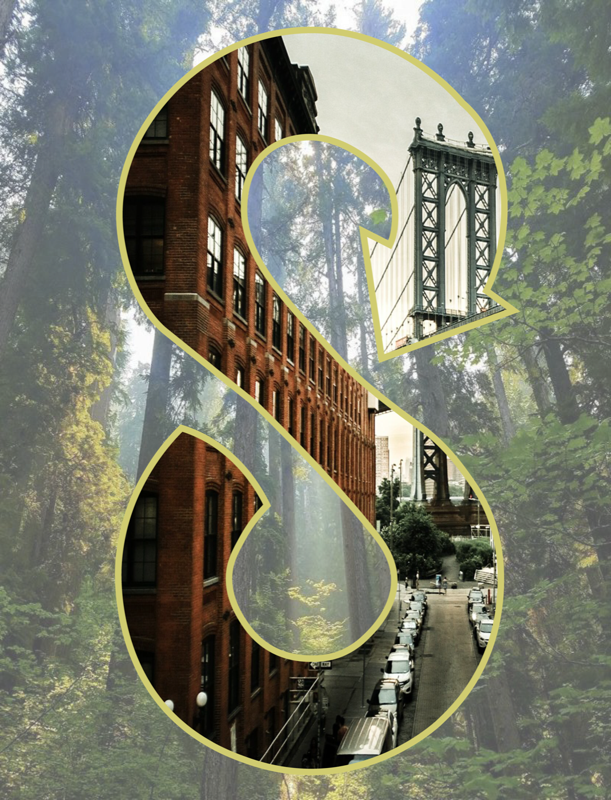

What I Do
Four Ways of Working
Each practice is a lens on the same question: how do we build cities that are just, resilient, and alive?

Model
Predict & Simulate
Random forests, regressions, and scenario simulations — translating complexity into forecasts that inform real decisions.
Python · scikit-learn
Map
Reveal Spatial Patterns
GIS analysis, interactive choropleths, and scrollytelling — making invisible geographies legible and actionable.
GeoPandas · Folium · PySAL
Sense
Build, Wear, Measure
I designed, 3D-printed, and wore a lung-shaped ozone sensor to measure what the city does to your body. Then I modeled the data.
ESP32 · Rhino · Python
Argue
Research & Persuade
A year-long thesis on circular economy in NYC construction — turning spatial analysis into policy recommendations worth 57M tCO₂e.
Python · statsmodels